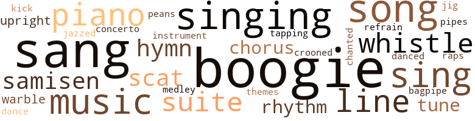
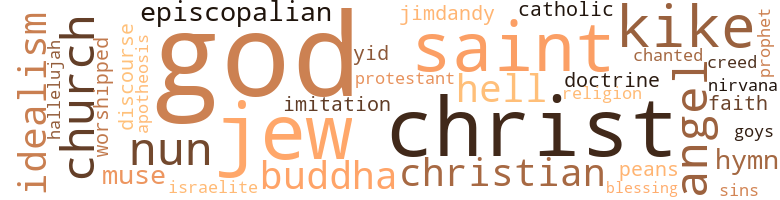

Music terms in the text
93 music-related terms matched in this text.
Most frequent terms in this topic: boogie (12); sang (11); singing (6); music (5); song (5)

bagpipe.n.01
Definition: a tubular wind instrument; the player blows air into a bag and squeezes it out through the drone
| word |
sentence |
| bagpipe |
The first bars of the Bat - tle Hymn of the Republic pealed from the great organ in Oxblood 's brain , but died in a sour bagpipe squeal . |
boogie.n.01
Definition: an instrumental version of the blues (especially for piano)
| word |
sentence |
| boogie |
By the way , Harrison , what is a boogie show ? " |
| boogie |
" Restin up for the boogie show , " Hoe said . |
| boogie |
The ghastly music - bugle call , boogie - woogie , samisen , harp , jew 's - harp , tomtoms , organ , and far - away pipes of Pan - made him eager for other sensations that might shut it out . |
| boogie |
We accordingly whitewashed the top portions of all rocks and , content with a job well done , went to town to take in the boogie show . |
| boogie |
By the way , sir , do you happen to know what a boogie show is ? " |
| boogie |
" What 's a boogie show , Lewis ? " he asked , turning to other problems . |
| boogie |
One over par is boogie . |
| boogie |
Pvt Hoe and I will hit Hiro Sat night for your boogie show , Hoe having sworn by Great White Spirit to stay off the firewater this time . |
| boogie |
Yr buddy - Pvt ( please note change of rank ) Xavier O ' Malley " What the hell 's a boogie show ? " |
| boogie |
" O'Malley claims he 's hitting town tomorrow ' for my boogie show ' . |
| boogie |
Ca n't be no show , boogie or otherwise , without you lay it on . |
| boogie |
" Before you go , Major , do you have any idea what a boogie show is ? " |
boogie.v.01
Definition: dance to boogie music
| word |
sentence |
| boogies |
" Here come the friggin boogies , " Pfc. Ladd said , " I ca n't believe it 's me standin here , " Marcantonio said . |
chorus.n.01
Definition: any utterance produced simultaneously by a group
| word |
sentence |
| chorus |
By the time the last chorus began , soldiers were moving toward the ring , giving tongue to Hounddog Howls , Coonhound Croons , Foxhound Full Cries , and Bloodhound Bays . |
| chorus |
Like the male chorus in a comic opera , they seemed to enter singing . |
concerto.n.01
Definition: a composition for orchestra and a soloist
| word |
sentence |
| concerto |
Pain in his head , fear for Hogan , fury at his friend Hideki , loathing for himself : these four themes were counterpointed in the clangorous atonal concerto playing in Oxblood 's inner ear . |
croon.v.01
Definition: sing softly
| word |
sentence |
| crooned |
The three of them threw back their heads and crooned . |
dance.n.01
Definition: an artistic form of nonverbal communication
| word |
sentence |
| dance |
It was a round of gaiety , commencing with a tea dance aboard General Finch 's yacht in picturesque Nagasaki harbor , continuing with a sitdown banquet , champagne and hummingbirds ' tongues , at the Nagasaki Golf Club ( full colonels and above ) , and ending in the rosy-fingered dawn with eggs scrambled by General Finch 's own rosy little fingers in the kitchen - ette of his duplex . |
dance.v.03
Definition: skip, leap, or move up and down or sideways
| word |
sentence |
| danced |
Sigmus ' bloodshot eyes danced an insane jig . |
hymn.n.01
Definition: a song of praise (to God or to a saint or to a nation)
| word |
sentence |
| hymns |
There was no getting away from the hymns . |
| hymn |
Sigmus said , a hymn of thanks - giving in his voice . |
jazz.v.01
Definition: play something in the style of jazz
| word |
sentence |
| jazzed |
I been jazzed , ragtimed , jammed , jived , Suzy-Q ' ed , boogied , and Nigra-spiritualed . " |
jig.n.01
Definition: music in three-four time for dancing a jig
| word |
sentence |
| jig |
Sigmus ' bloodshot eyes danced an insane jig . |
kick.v.04
Definition: kick a leg up
| word |
sentence |
| kick |
Moving carefully so as not to kick over any of the hun - dreds of bottles dead on the ground around him , Oxblood rose to his feet , then stepped up on the bench . |
medley.n.01
Definition: a musical composition consisting of a series of songs or other musical pieces from various sources
| word |
sentence |
| medley |
Approaching the massed lieutenants and captains at the bar , Oxblood was able to arrange and annotate the medley of feelings in their faces . |
music.n.01
Definition: an artistic form of auditory communication incorporating instrumental or vocal tones in a structured and continuous manner
| word |
sentence |
| music |
A light collation will be served you , accompanied by live music , strains of the romantic samisen . |
| music |
The ghastly music - bugle call , boogie - woogie , samisen , harp , jew 's - harp , tomtoms , organ , and far - away pipes of Pan - made him eager for other sensations that might shut it out . |
| music |
There was a record on the phonograph but above the music he heard a deep and terrible moaning . |
| music |
Tom talked so intelligently about the wretched Berg thing Or - mandy had insisted on playing - I just hate that old new scale - and I tried to listen with an open mind to what he said , but I 'm afraid I did pop up and say something about Respighi being the real music . |
| music |
We talked mostly about you , also about the music , on which we did n't see eye to eye ( ! ) |
musical_instrument.n.01
Definition: any of various devices or contrivances that can be used to produce musical tones or sounds
| word |
sentence |
| instrument |
Second thoughts told him that Yoshiko might notice the unhooked telephone and take fright , so he placed both the instrument and the receiver in a drawer of the desk . |
paean.n.02
Definition: (ancient Greece) a hymn of praise (especially one sung in ancient Greece to invoke or thank a deity)
| word |
sentence |
| peans |
Eu ' peans go over big with Nigras , and the converse , they say , is often true . " |
piano.n.01
Definition: a keyboard instrument that is played by depressing keys that cause hammers to strike tuned strings and produce sounds
| word |
sentence |
| piano |
' Boogie ' and ' woogie ' are synonymous , both terms referrin to playin a piano too rapidly . " |
| Piano |
Piano 's a harsh mis - tress , hey ? " |
| piano |
What the hell happens now , Oxblood thought , and just then he heard some notes picked out on the piano . |
| piano |
A fat captain from G-4 was at the piano , playing Negro spiritu - als , Several officers were singing along with him in faked-up darkie accents : " Ah looked ovah Jo ' dan an ' what did Ah see - eee ? " |
pipe.n.04
Definition: a tubular wind instrument
| word |
sentence |
| pipes |
The ghastly music - bugle call , boogie - woogie , samisen , harp , jew 's - harp , tomtoms , organ , and far - away pipes of Pan - made him eager for other sensations that might shut it out . |
rap.n.05
Definition: genre of African-American music of the 1980s and 1990s in which rhyming lyrics are chanted to a musical accompaniment; several forms of rap have emerged
| word |
sentence |
| raps |
As nearly as he could reckon , there were four possible raps against him : disobeying Colonel Ames ' direct order by bring - ing the Warblers to the Senior Officers ' Mess , lying to Ames about having a VOCG re utilization of the Junior Officers ' Club by USO personnel , conduct unbecoming an officer on the leather couch with Leah , and assault and battery on the person of Marshall Bowles . |
refrain.n.01
Definition: the part of a song where a soloist is joined by a group of singers
| word |
sentence |
| refrain |
Sergeants The only real ones are the sergeants They are not bellowing bullying fat funny wise grizzled heroic as in song and story Sergeants are thin their souls I mean Are thin thin as cigar smoke Climbers the sergeants live for Deals they figure the percentages Sybarites they walk on A wall to wall carpeting of privates Jugglers they keep in the air Three five eleven forty-seven Second johns first johns captains majors light & chicken colonels any & all generals I who have been a buck ass private I have Drunk the beer dreamed of the hoors talked Baseball I who have been a second john I have Drunk the blended dreamed of the first johns wife talked Principles God in the next one let me be a sergeant let me Drink blood refrain from thinking and talk Angles The sergeants ah they are the real ones Real with the reality of civilians Sergeants The sergeants are the survivors Father , if only one sergeant had got wind of the recent flap at HQ , he 'd never have allowed it to happen . |
rhythm.n.04
Definition: the arrangement of spoken words alternating stressed and unstressed elements
| word |
sentence |
| rhythm |
" All Nigras got rhythm , a known fact . |
| rhythm |
Your hands ache , like a lover 's hands , to fondle once more the fine-grained wood of the stock of the Ml carbine , your legs long to pound out the spondaic rhythm of a forced march . |
samisen.n.01
Definition: a Japanese stringed instrument resembling a banjo with a long neck and three strings and a fretted fingerboard and a rectangular soundbox; played with a plectrum
| word |
sentence |
| samisen |
A light collation will be served you , accompanied by live music , strains of the romantic samisen . |
| samisen |
The ghastly music - bugle call , boogie - woogie , samisen , harp , jew 's - harp , tomtoms , organ , and far - away pipes of Pan - made him eager for other sensations that might shut it out . |
scat.n.01
Definition: singing jazz; the singer substitutes nonsense syllables for the words of the song and tries to sound like a musical instrument
| word |
sentence |
| scat |
He decided on the conch and sat down , trying to maintain his military posture , for which the scat seemed to be too low , Oxblood noticed the neat row of photographs on the wall be - hind the General 's desk : Woodrow Wilson decorating a tall young Strapp , FDR in the same pose with the same Strapp , Foch kissing Strapp , MacArthur laughing at one of Strapp 's jokes . |
| scat |
Oxblood settled back on the scat , while Beaver started the car . |
sing.v.02
Definition: produce tones with the voice
| word |
sentence |
| sing |
" We 're here to sing for you boys , that is our job , we love it , and we do n't expect any special fuss . |
| sang |
Soaping his chest , he sang louder , deeper : " He who would valiant be ' Gainst all disaster , Let him in constancy Follow the Master - " That was the hell of a church school education . |
| sing |
André , in this Wasteland where no birds sing , only you can help me . |
| sang |
" ALL THAT MEAT , " Leah sang , " AND NO POTATAS just ai n't right , like green tomatas - " She stood under the spotlight in the center of the boxing ring that had been set up on the fifty-yard line of the Lacquer Bowl , wearing a white evening dress whose front was cheer - fully open to the breeze . |
| sang |
Head thrown back , hands on haunches , she sang like a jolly fishwife bellowing her wares . |
| sang |
" Green eyes , " she sang , " Those cool and limpid green eyes - " There was not a sound in the whole Bowl but that voice , hateful and teasing , caressing the ten thousand men , skilfully fondling them , biting them , lashing them , bringing their slug - gish manhood to attention . |
| sang |
" GREEN EYES - " Shawna sang , held the note a second , let it die . |
| sang |
" Joshua fit de battle of Jericho , " Marshall Bowles sang in his strong , sad , pious baritone . |
| sing |
" Everybody sing . |
| sang |
" Joshua fit de battle of Jericho , " sang the thousands of soldiers , the fat happy girl , the lovely hateful girl , and the de - cent quiet man - " Jericho , JERICHO-O - " Joshua fit de battle of Jericho , AND DE WALLS COME TUMBLIN DOWN . " |
| sang |
" And the walls , " he sang to himself , " come tumblin down " Hideki bowed Japanesely to them at the main door of the Gas Building , but winked Occidentally at Oxblood as soon as the Warblers had passed . |
| sang |
" When the saints , When the saints , When the saints come marching in , " sang a reedy Japanese voice . |
| sang |
" How l long to be in that number , " Oxblood sang out , loud and clear . |
| sang |
" When the saints come marching in ! " sang Oxblood , Leah , Hideki , and a surprising number of the faces at the bar , showing relief from an unbearable bewilderment . |
| Sing |
To prepare you to understand , I enclose a Poem I have just written : Night With L - Tunneling velvet enfolded Buoyancy endlessly billowing Cry of the terrible trumpets Stallions of Jericho whinnying Darkness and splendor of bonfires Tropical whiff of miasma Naked aswim in the Congo Laughter of Pan and of Maia Now nower nowest implosion Joy of the Day of Creation Baby of Bethlehem burping Twin cigarettes to Nirvana And the Lord Jehovah moved upon the darkness Sing hosanna ( yeah ) eighttothebar ! |
| sing |
From the Coonhound Club , farther up the hill , he could hear the voice of Colonel Buonocuore , leading his officers in song : " Come all ye Coonhounds , let us sing and clap , We 're gon na feast royally on roasted Jap . |
singing.n.01
Definition: the act of singing vocal music
| word |
sentence |
| singing |
He noticed he was singing . |
| singing |
She ended up singing in a real dive ; some of the customers were Porto Ricans . |
| singing |
" Jericho , JERICHO-O - " The girls were singing with him now . |
| singing |
Like the male chorus in a comic opera , they seemed to enter singing . |
| singing |
A fat captain from G-4 was at the piano , playing Negro spiritu - als , Several officers were singing along with him in faked-up darkie accents : " Ah looked ovah Jo ' dan an ' what did Ah see - eee ? " |
| singing |
A voice was singing : " - ip to the moon on gossamer to the moon on gossamer wi - ip to the moon on wi ----- ip to the . " |
song.n.01
Definition: a short musical composition with words
| word |
sentence |
| song |
" Andy , you should n't have done it , we 're soldiers too , soldiers of song , we expected to sleep in some leaky mildewy old pyramidal tent . |
| song |
All about her and above her in the darkness , ten thousand soldiers , the Coonhounds , Foxhounds , and Bloodhounds of the infantry regiments , the Hounddog HQ men , the Eager Beagles of Div Arty , strained toward the great glistening girl , their nerves , feel , thighs , hands slapping out the hard rackety beat of the song . |
| song |
Marshall Bowles hung on the outskirts of the group , making no effort to join in the song . |
| Songs |
Imagine the joy of Grand ' mère when she receives the manuscript of - Nineteen Love Songs by David Israel Drake I am pleased with the title . |
| song |
Sergeants The only real ones are the sergeants They are not bellowing bullying fat funny wise grizzled heroic as in song and story Sergeants are thin their souls I mean Are thin thin as cigar smoke Climbers the sergeants live for Deals they figure the percentages Sybarites they walk on A wall to wall carpeting of privates Jugglers they keep in the air Three five eleven forty-seven Second johns first johns captains majors light & chicken colonels any & all generals I who have been a buck ass private I have Drunk the beer dreamed of the hoors talked Baseball I who have been a second john I have Drunk the blended dreamed of the first johns wife talked Principles God in the next one let me be a sergeant let me Drink blood refrain from thinking and talk Angles The sergeants ah they are the real ones Real with the reality of civilians Sergeants The sergeants are the survivors Father , if only one sergeant had got wind of the recent flap at HQ , he 'd never have allowed it to happen . |
| song |
From the Coonhound Club , farther up the hill , he could hear the voice of Colonel Buonocuore , leading his officers in song : " Come all ye Coonhounds , let us sing and clap , We 're gon na feast royally on roasted Jap . |
suite.n.01
Definition: a musical composition of several movements only loosely connected
| word |
sentence |
| suites |
The transient suites on the 7th floor where we put Oberon , Titania , & Bottom last time should do fine . |
| Suite |
The VIP Transient Suite in this hotel . " |
| Suite |
" Sir , " Oxblood said , after he had rushed through the usual military courtesies , " the Commanding General , in view of his imminent departure for SCAP , has directed me to apply to you , as Acting Division Commander , for an order to the effect that the USO unit entering the Division Area tomorrow be quartered in the VIP Transient Suite of the Senior Offi - cers ' Quarters ( Hiroshima Palace Hotel ) . " |
tapdance.v.01
Definition: dance and make rhythmic clicking sounds by means of metal plates nailed to the sole of the dance shoes
| word |
sentence |
| tapping |
Hideki was standing at the upright , tapping out the tune with one finger . |
theme.n.03
Definition: (music) melodic subject of a musical composition
| word |
sentence |
| themes |
Pain in his head , fear for Hogan , fury at his friend Hideki , loathing for himself : these four themes were counterpointed in the clangorous atonal concerto playing in Oxblood 's inner ear . |
tone.v.01
Definition: utter monotonously and repetitively and rhythmically
| word |
sentence |
| chanted |
SHAW-NA ! " the soldiers chanted . |
tune.n.01
Definition: a succession of notes forming a distinctive sequence
| word |
sentence |
| line |
" It 's superb , David , masterly , plastic values , the Floating World , subtlety of line , the works . |
| tune |
There were even four fiddlers in gypsy costume - - Morve could procure anything - who struck up a gay Hungarian tune and capered before the Warblers toward Major Marion 's door . |
| tune |
Hideki was standing at the upright , tapping out the tune with one finger . |
| line |
After a while , he sat down at a able and wrote : The coin I found and touched is dust It was a good first line , but he had to stop there . |
| line |
He began to re - cite it and was surprised to find that the second line was there waiting for him . |
| line |
He cleared his throat for the punch line . |
upright.n.02
Definition: a piano with a vertical sounding board
| word |
sentence |
| upright |
Hideki was standing at the upright , tapping out the tune with one finger . |
| upright |
He swung his legs off the desk and sat upright , eyes on Oxblood . |
whistle.n.01
Definition: the sound made by something moving rapidly or by steam coming out of a small aperture
| word |
sentence |
| whistles |
Expecting to hear whistles and feel billysticks , he walked to the elevator , rang , waited , stepped in , and pressed the button for Roof Garden . |
whistle.v.01
Definition: make whistling sounds
| word |
sentence |
| whistle |
Far down the track , a whistle blew . |
| whistle |
He put his whistle to his lips and blew . |
yodel.v.01
Definition: sing by changing register; sing by yodeling
| word |
sentence |
| warble |
The fourth whiskey was beginning to warble inside him when Oxblood realized how tired he was . |
| Warble |
" Warble them " Oxblood said . |
Violence terms in the text
188 violence-related terms matched in this text.
Most frequent terms in this topic: hate (23); sword (14); hates (13); ball (8); brave (8)

abhorrence.n.01
Definition: hate coupled with disgust
| word |
sentence |
| loathing |
Pain in his head , fear for Hogan , fury at his friend Hideki , loathing for himself : these four themes were counterpointed in the clangorous atonal concerto playing in Oxblood 's inner ear . |
| loathing |
He sat down and looked at the telephone with loathing . |
alcoholism.n.01
Definition: habitual intoxication; prolonged and excessive intake of alcoholic drinks leading to a breakdown in health and an addiction to alcohol such that abrupt deprivation leads to severe withdrawal symptoms
| word |
sentence |
| alcoholism |
He did , knowing he had taken the first step toward alcoholism . |
anger.n.01
Definition: a strong emotion; a feeling that is oriented toward some real or supposed grievance
| word |
sentence |
| anger |
As he cut across one of those empty lots so typical of Hiroshima , Oxblood tried to feed his anger with incantations . |
bayonet.n.01
Definition: a knife that can be fixed to the end of a rifle and used as a weapon
| word |
sentence |
| bayonet |
General Ott himself , a square-shouldered man with a round , ideally bald head , was sitting stiff as a bayonet be - hind his bare desk staring straight at the door when Oxblood walked in . |
bleeding.n.01
Definition: the flow of blood from a ruptured blood vessel
| word |
sentence |
| bleeding |
" Oh my bleeding piles . |
bruise.n.01
Definition: an injury that doesn't break the skin but results in some discoloration
| word |
sentence |
| bruise |
She had a large blue and red bruise over one eye and an ugly swollen cut across her lips . |
brutality.n.02
Definition: a brutal barbarous savage act
| word |
sentence |
| barbarism |
I have perhaps made a barbarism ? " |
carbine.n.01
Definition: light automatic rifle
| word |
sentence |
| carbine |
Your hands ache , like a lover 's hands , to fondle once more the fine-grained wood of the stock of the Ml carbine , your legs long to pound out the spondaic rhythm of a forced march . |
contemn.v.01
Definition: look down on with disdain
| word |
sentence |
| despises |
" Thing about Shawna , she despises Leah and me . |
| despises |
Every Harvard man hates and despises the Boston Irish . |
craze.n.02
Definition: state of violent mental agitation
| word |
sentence |
| frenzy |
He consid - ered going to the bathroom to get some water , but had al - ready learned that any major movement of his body would send the Jamaican up there into a frenzy . |
crucify.v.01
Definition: kill by nailing onto a cross
| word |
sentence |
| crucified |
" Christ crucified , " Sigmus said . |
draw.v.23
Definition: pull (a person) apart with four horses tied to his extremities, so as to execute him
| word |
sentence |
| drew |
He drew up in front of Division and turned abruptly to face Oxblood . |
| drew |
The jeep drew up under the marquee of the Hiroshima Palace . |
| draw |
The car belonged to Morve 's shop , Division Billeting Office , but apparently the deal reeked a little , for Beaver had been instructed never to draw up directly before the Gas Building door . |
eliminate.v.03
Definition: kill in large numbers
| word |
sentence |
| annihilate |
Salving my Episcopalian Conscience for not having done my bit to annihilate the krauts and nips . " |
ferociousness.n.01
Definition: the trait of extreme cruelty
| word |
sentence |
| brutality |
O'Malley rushed up to help him , shouting " Police brutality ! " |
ferocity.n.01
Definition: the property of being wild or turbulent
| word |
sentence |
| fierceness |
Oxblood was surprised at the fierceness in his voice . |
fight.n.02
Definition: the act of fighting; any contest or struggle
| word |
sentence |
| Fighting |
Fighting was good . |
fight.n.05
Definition: a boxing or wrestling match
| word |
sentence |
| fight |
Fight the good fight . |
| fight |
Less than a minute after the fight had started , Hoe , Drake , and O'Malley were behind the turkey wire of an MP lockup truck , and the redfaced corporal was saying to Oxblood : " Next time , Lootenant , I fear I may have to get rough wit you . " |
| fight |
I was itching to pitch in and fight by your side , except on account of my hands . |
| fight |
Oxblood remembered the vehicle that had made the jack * rabbit start just before the fight . |
| fight |
For the last half hour , Oxblood had been imagining his apotheosis , a reward for having fought the good fight with all his might . |
| fight |
Because he had in some way faltered in his fight with the Dragon ? |
fight.v.02
Definition: fight against or resist strongly
| word |
sentence |
| fighting |
Take heart : I am fighting the same battle as you , but on another part of the front . |
| Fight |
Fight the good fight . |
| fighting |
" Konnichi-wa , girlsu , " he said , fighting down his frustra - tion . |
| fought |
Oxblood fought back the Oxblood temper . |
| fought |
" The odious doctrine of racial supremacy , " the General said , sloshing the lather over his long jaw , " is the enemy that our country and I have fought so bitterly so recently . |
| fought |
He fought against it , but said , " Suppose you tell me what that Indian was doing in Miss Wheat 's bed ? " |
| fighting |
What is your whole history but thousands of years of fighting and killing your fellow men without any good reason , such as wanting to eat them ? " |
| fought |
For the last half hour , Oxblood had been imagining his apotheosis , a reward for having fought the good fight with all his might . |
| fought |
He fought through to the nearest MP , who turned out to be the redfaced corporal . |
| fighting |
Oxblood knew he was fighting on the side of the angels . |
| fight |
Anyway , I was help - ing a little bit , was n't I , to fight one of those battles by taking that nice boy Woodruff to the Orchestra ? |
| fought |
In three days , he had fought with three strong men : Fairfax , Marshall Bowles , a fanatical Japanese charging with naked sword . |
frustration.n.03
Definition: a feeling of annoyance at being hindered or criticized
| word |
sentence |
| frustration |
All the soldiers were standing , bellowing , sobbing , pounding their feet , turn - ing their frustration into sound . |
fury.n.01
Definition: a feeling of intense anger
| word |
sentence |
| fury |
There was fury and compassion for them both in his eyes . |
| rage |
The old man was trem - bling with rage . |
| rage |
Every one in the atrium began to roar with rage . |
| rage |
Ten thousand men screamed with rage . |
| rage |
Looking back at Leah-san the RAF man raffishly saying goodnightu so enjoyed the concertu : NOW the opportunity Now to go or never go : round behind the bar to go pop into the pantry so Service elevatoru push a button : Waitingu Circuit of the pendulum certainlyu certainly earned a rest oh certainly stormed the ramparts certainly God and Country certainly TomTomMother certainly sister gone a-flirtinly tired oh Fatty Gay Okkiburu hurtinly Elevatoru a buttonpushu craftily Swooshem downu outu and up the corridoru door a cer - tain difficulty push the key incertainly lock again from inside craftily from inside : three or four pacesu : another soft in darknessu ( Leah so regretfully ) flop and : a lie a Leah : sleep hallelujah sleep ANDREW DELANCEY OXBLOOD LIEUTENANT INFANTRY HEADQUARTERS NUMBER FIFTY HIROSHIMA JAPAN URGENT WEEZIE JUST PHONED VERY UPSET SAID TOM INVITED ANN THEATRE STOP WHAT TO DO QUESTION MARK DO WISH PLAY WERENT OTHELLO SO SUGGESTIVE STOP I LIKE TOM AND WANT TO BE BROADMINDED WORTHY MY FINE BOY BUT MUST CONSIDER ANN WHO SO YOUNG ALSO DADDYS HEART THING STOP PLEASE CABLE ADVICE CARE CRICKET CLUB SINCE DONT WANT DADDY HAVE INKLING STOP DO WISH WEEZIE WERENT SUCH BUSY - BODY STOP LOVE THEE BUT MUST STOP NOW STOP HEART FULL OF EASTER LOVE MOTHER ELEGY FOR SIR ANDREW OXBLOOD O parfait gentil Knight in khaki clad , My Bayard , Don Quixote , Galahad , Friend of the Ethiope and Japanee , Of redskin , heathen Israelite , and me - Young , gallant , pure , and filled with righteous rage , You charge the one true Dragon of our age . |
| fury |
Pain in his head , fear for Hogan , fury at his friend Hideki , loathing for himself : these four themes were counterpointed in the clangorous atonal concerto playing in Oxblood 's inner ear . |
| rage |
He gasped with rage , tried to shout , but could manage only a belch . |
| fury |
The man 's eyes were full of sick - ness , smoke and fury . |
| fury |
Then he brought down the flat of the sword with all his strength - and an unholy fury of added adrenalin strength - upon his braced right knee . |
| rage |
Through the red curtain of rage that hung before his eyes , he could see the bland flat Japanese faces , dozens of them , hundreds of them , staring at him , the brutal white man , then turning toward the train to look at the crumpled , bleeding black . |
| Furies |
In the intermission I introduced him to May Linnaeus , Prue Rittenhouse , and Cousin Winnie Drew , the so-called Three Furies . |
gag.v.06
Definition: cause to retch or choke
| word |
sentence |
| choke |
Her laughter broke over them , long deep Pacific combers of laughter , swamping them , drowning them , making them all choke , gasp , laugh , and choke again - Oxblood , Marshall Bowles , even the Beaver , all of them except Shawna , who managed only a distant smile . |
| choke |
Her laughter broke over them , long deep Pacific combers of laughter , swamping them , drowning them , making them all choke , gasp , laugh , and choke again - Oxblood , Marshall Bowles , even the Beaver , all of them except Shawna , who managed only a distant smile . |
gas.v.01
Definition: attack with gas; subject to gas fumes
| word |
sentence |
| gassed |
My great-grandfather lost a leg at Gettysburg , and my father was gassed in the Argonne . " |
gun.n.01
Definition: a weapon that discharges a missile at high velocity (especially from a metal tube or barrel)
| word |
sentence |
| guns |
We got six count 'em six typewrit - ers goin like machine guns , and even Major Mothuh D. Marion has looked in after hours to see what is doin . |
| gun |
There were three round puckers in a straight line near the shoulder , probably from machine gun slugs . |
| gun |
He looked at Hideki , who had already be - gun a long Japanese sentence , rich in compliment and proto - col. Then he looked at Oxblood . |
harakiri.n.01
Definition: ritual suicide by self-disembowelment on a sword; practiced by samurai in the traditional Japanese society
| word |
sentence |
| Hara-kiri |
" But your father , Hideki - " " Hara-kiri is a solemn medieval ceremony . |
hate.n.01
Definition: the emotion of intense dislike; a feeling of dislike so strong that it demands action
| word |
sentence |
| hatreds |
Your aim , as I see it , must be to bring the soldiers of your famous Division to face the great task before them with pride and zeal , seek understanding with the Japanese , forget war 's poisonous hatreds , and make peace , peace with their former enemies , peace in their own hearts . |
| hatred |
I suspect your greatest stumbling block may be not the memories of bat - tle , but the residue of the sickening bile of racial hatred that was too often apparent in our own government 's propaganda during the Pacific War . |
| hate |
Sigmus saw it , and his eyes flashed up to Oxblood 's face , zapping him with a Buck Rogers death-ray blast of hate . |
| hate |
I would sure as hell hate to get lost in there without my canoe and com - pass . " |
| hate |
The loathsome Reptile , foul with hate and sin , Opes wide his putrid maw . |
hate.v.01
Definition: dislike intensely; feel antipathy or aversion towards
| word |
sentence |
| hate |
He just happens to hate krauts , " the boy said , wiping his eyes with a Kleenex . |
| hate |
It 's the narrowminded Jewish atmosphere they grow up in makes them hate krauts . " |
| Hate |
Hate to see you drop the ball . " |
| hated |
" He hated us ? " |
| hate |
Do you hate us ? " |
| hates |
She hates my guts because I 'm a Texan , which is why I get a bang out of old Chita . |
| hate |
" God , I hate prejudice . |
| hate |
Andy , I hate liberals , I hate any one who wants to rock the boat . |
| hate |
Andy , I hate liberals , I hate any one who wants to rock the boat . |
| hates |
Every Harvard man hates and despises the Boston Irish . |
| hate |
Ye hate me , Drake , ye snot-nosed blue - blood Boston Brahmin . |
| hates |
That Harvard girl I met in Park Street Under hates me . |
| hates |
Even me old friend Andy , deep in his Harvard heart , he hates me . " |
| hate |
Boy , there 's nothing I hate more than a pro- fessional yid . |
| hate |
I really hate to do it . |
| hate |
" Much as I hate to break in on your conversation , it 's time for Bowlu-san to toddle . " |
| hated |
I was very upset at the time - 17 is young , and I hated thy lying about thy age , even for such patriotic , brave reasons , though I must say thy father was pleased as punch . |
| hate |
Tom talked so intelligently about the wretched Berg thing Or - mandy had insisted on playing - I just hate that old new scale - and I tried to listen with an open mind to what he said , but I 'm afraid I did pop up and say something about Respighi being the real music . |
| hate |
Much as I hate to lose you , and I 'll sure as Christ made little green apples never have such a Morale Officer as you again - " " Sir , " Oxblood said . |
| hates |
Beaver hates Japs . |
| hates |
O'Malley hates the sons of the Pilgrim Fathers . |
| hates |
Hoe hates Apaches , Sioux , Crows , Sac-and-Foxes , Cornplanters , and palefaces . |
| hates |
Shawnn O'Shay hates American boogs , who hate Shawna O'Shay . |
| hate |
Shawnn O'Shay hates American boogs , who hate Shawna O'Shay . |
| hates |
Marshall Bowles hates white liberals . |
| hates |
Sigmus hates krauts . |
| hates |
Marcantonio hates gooks , i.e. , native-born Europeans . |
| hates |
Buonocuore hates Marcantonio because he 's a wop and not even a frog . |
| hated |
Mr. Ikada 's Papa-san hated the White Peril . |
| hates |
Hogan-san 's Papa-san hates me . " |
| hate |
" So who do you find to hate in Iowa ? " |
| hate |
Who do you hate . |
| hating |
I do n't believe in hating people . " |
| hate |
" Gosh , Andy , it 's not healthy not to hate somebody . " |
| hate |
When they came out into the air again , he said : " I hate Second Lieutenant Harrison W. Morve . " |
| hate |
I hate him . " |
| hate |
" What I mean is , Harrison W. Morve is the man of the future , " " Now , " Betsy said , " you have something good and big to hate , Harrison W. Morve is n't a a minority at all . |
| hate |
I do n't know what a Morale Officer is and hate to think , but I do know that being chosen for staff work at thy age is a great - honor . |
hernia.n.01
Definition: rupture in smooth muscle tissue through which a bodily structure protrudes
| word |
sentence |
| hernia |
Holy hernia , Sigmus , why you keepin my young friend waitin in this putrid old anteroom without so much as an airconditioner ? |
indignation.n.01
Definition: a feeling of righteous anger
| word |
sentence |
| outrage |
" Why , this is an outrage . |
| indignation |
It was difficult to keep up his fine moral indignation with his legs and lungs and heart all working so hard . |
infuriate.v.01
Definition: make furious
| word |
sentence |
| infuriates |
I know it infuriates thee when I talk this way , but a man who 's already had two coro - naries can permit himself the luxury of seeing things as they are . |
injury.n.01
Definition: any physical damage to the body caused by violence or accident or fracture etc.
| word |
sentence |
| hurt |
His friend , old Bobbylee , looked at him with the wild hurt eyes of a wounded stag . |
| hurt |
To his surprise , the sword did not break , and the knee hurt like hell . |
kick.v.04
Definition: kick a leg up
| word |
sentence |
| kick |
Moving carefully so as not to kick over any of the hun - dreds of bottles dead on the ground around him , Oxblood rose to his feet , then stepped up on the bench . |
kick_back.v.02
Definition: spring back, as from a forceful thrust
| word |
sentence |
| kick |
Very truly yours , Moreau B. Marion Major , Infantry P.S. I am feeling coltish and plan to kick my heels some . |
kill.v.10
Definition: cause the death of, without intention
| word |
sentence |
| kill |
" Andrew Oxblood , " he said , " if you lay a hand on Hogan , I will kill you . " |
| kill |
He is here not to destroy but to build , not to kill but to teach . |
| killed |
" You damn fool , you might have gestured yourself down the funnel of my troopship and killed us both . |
| killed |
" My father killed himself , " Hideki said , " the day your Division marched into the city . |
| killed |
My father killed himself solemnly and medievally , because he was afraid . " |
| killed |
Why had n't he killed him ? |
| killing |
What is your whole history but thousands of years of fighting and killing your fellow men without any good reason , such as wanting to eat them ? " |
knife.n.02
Definition: a weapon with a handle and blade with a sharp point
| word |
sentence |
| knife |
He consigned the shrines of our ancestors to my keeping and put the knife in his belly . |
lynch.v.01
Definition: kill without legal sanction
| word |
sentence |
| lynched |
" You stupid mothuh , you want to get lynched ' ? " |
murder.n.01
Definition: unlawful premeditated killing of a human being by a human being
| word |
sentence |
| murder |
He told about Leah and himself , about Leah and Drake , then about Hogan 's father Hogan , and about his own attempt to murder Marshall Bowles . |
musket.n.01
Definition: a muzzle-loading shoulder gun with a long barrel; formerly used by infantrymen
| word |
sentence |
| musket |
His skill with the musket is said to have helped persuade the Lenape Indians to sign the famous treaty which marked the founding of our city . |
musket_ball.n.01
Definition: a solid projectile that is shot by a musket
| word |
sentence |
| balls |
" Morale is not a matter of pingpong balls and soccer games and orientation lectures and pansy USO troupes rccitin A Midsummer Night 's Drool by William F. Shakespeare . |
| balls |
" A meetin of the minds , Oxblood , you and me are goin to get along like two balls in a scrotum . |
| ball |
" This little jowlwag has been most productive , Lieutenant , and you are doin a real ball - buster of a job . |
| ball |
" Glad to see you 're getting the ball into play , Lieutenant . |
| ball |
Hate to see you drop the ball . " |
| ball |
green grass and kick that ball way up into the big old sky , and the hell with you . |
| ball |
" You mean - " " I mean , " Ames said , fixing Oxblood with eyes as small and round and hard as ball bearings , " that you are hereby authorized to lock 'em in to the Hiroshima Club , bind 'em , gag 'em , dope 'em , lynch 'em , as long as you do n't bring 'em anywhere near the personnel of this Division . " |
| balls |
Let 's hope you do , Lieutenant , because if you do n't - I 'll have your balls for breakfast , country-fried . " |
| balls |
" Ikada , " Oxblood said quietly , " I have you by the balls . |
| ball |
About your going back to Coonhound , I 've al - ready set the ball rolling . |
| ball |
They go out in the fuccon Hiro Club garden and play ball . " |
| ball |
" What do they do when they 're not playing ball ? " |
open_fire.v.01
Definition: start firing a weapon
| word |
sentence |
| fired |
This was the moment when he , young and inexperienced but fired with idealism , could influence a great leader of men . |
| fired |
You can have me fired . " |
pain.v.02
Definition: cause emotional anguish or make miserable
| word |
sentence |
| hurt |
I do n't want to hurt Tom 's feelings and I want to be modern , liberal , with it , democratic , etc. and besides I like him , but how can I broach the sub - ject to Them ? |
| hurt |
My feelings are really hurt . |
| hurt |
I hurt your feel - ins ? |
pique.v.01
Definition: cause to feel resentment or indignation
| word |
sentence |
| pique |
" Sir , I was only going to say that I may have mentioned something about going back to Coonhound in a letter I wrote in a moment of , uh , pique with Lieutenant Morve , but actu - ally I 'm by no means sure - " " Youah by no means sure . " |
pistol.n.01
Definition: a firearm that is held and fired with one hand
| word |
sentence |
| pistol |
" Bet your pre-pubic pistol it has . |
punch.n.01
Definition: (boxing) a blow with the fist
| word |
sentence |
| punch |
He pivoted away from the window and deliv - ered a sharp but friendly punch to Oxblood 's appendix . |
| Punch |
This morning he had seen it simply as another club , no worse than all the clubs to which his father had dragged him , but now , looking at it through the eyes of the visitors , he took in the moth-eaten animal heads on the walls , the antiqued plywood panelling , the fifth - rate Oriental-type runner on the stairs , the unread prewar copies of Punch and Illustrated London News on the tables . |
| punch |
I was very upset at the time - 17 is young , and I hated thy lying about thy age , even for such patriotic , brave reasons , though I must say thy father was pleased as punch . |
punch.v.01
Definition: deliver a quick blow to
| word |
sentence |
| plugged |
He plugged in the electric razor , whose whine shut out their dialogue . |
rape.n.03
Definition: the crime of forcing a woman to submit to sexual intercourse against her will
| word |
sentence |
| assault |
As nearly as he could reckon , there were four possible raps against him : disobeying Colonel Ames ' direct order by bring - ing the Warblers to the Senior Officers ' Mess , lying to Ames about having a VOCG re utilization of the Junior Officers ' Club by USO personnel , conduct unbecoming an officer on the leather couch with Leah , and assault and battery on the person of Marshall Bowles . |
resentment.n.01
Definition: a feeling of deep and bitter anger and ill-will
| word |
sentence |
| bitterness |
Most of all , he loved the name " Lieutenant Oxblood " and the excitement of being a young American officer in a foreign city , charged with a part in the historic mission of bringing together two great peoples after the blood and bitterness of war . |
resist.v.04
Definition: withstand the force of something
| word |
sentence |
| resist |
No Southerner of gentle breedin could resist the challenge high yaller ass with such an uppity twitch . " |
| resist |
How American it was to resist au - thority . |
rifle.n.01
Definition: a shoulder firearm with a long barrel and a rifled bore
| word |
sentence |
| rifles |
I saw the great Weezie Hughes at the Haverford Pharmacy wearing infantry rifles on her cele - brated bosom . |
| rifles |
The three soldiers stood should shoulder , solid as stacked rifles , and addressed themselves the tree . |
shock.n.02
Definition: the violent interaction of individuals or groups entering into combat
| word |
sentence |
| shock |
Nervous strain , overwork , com - plete breakdown , six months under electric shock treatment . |
sting.n.03
Definition: a painful wound caused by the thrust of an insect's stinger into skin
| word |
sentence |
| bite |
His eyes were a deep blue-grey , the color of the barrel of the M1 , and the muscles of his jaw were quivering , as if he were about to take a bite of lieutenant . |
| bite |
Tell you what , Andy , why do n't we all go grab a bite there ? " |
strike.v.04
Definition: make a strategic, offensive, assault against an enemy, opponent, or a target
| word |
sentence |
| hit |
Pvt Hoe and I will hit Hiro Sat night for your boogie show , Hoe having sworn by Great White Spirit to stay off the firewater this time . |
strong-arm.v.02
Definition: be bossy towards
| word |
sentence |
| bullying |
Sergeants The only real ones are the sergeants They are not bellowing bullying fat funny wise grizzled heroic as in song and story Sergeants are thin their souls I mean Are thin thin as cigar smoke Climbers the sergeants live for Deals they figure the percentages Sybarites they walk on A wall to wall carpeting of privates Jugglers they keep in the air Three five eleven forty-seven Second johns first johns captains majors light & chicken colonels any & all generals I who have been a buck ass private I have Drunk the beer dreamed of the hoors talked Baseball I who have been a second john I have Drunk the blended dreamed of the first johns wife talked Principles God in the next one let me be a sergeant let me Drink blood refrain from thinking and talk Angles The sergeants ah they are the real ones Real with the reality of civilians Sergeants The sergeants are the survivors Father , if only one sergeant had got wind of the recent flap at HQ , he 'd never have allowed it to happen . |
suicide.n.01
Definition: the act of killing yourself
| word |
sentence |
| suicide |
News of the suicide of Kaga , the famous racist professor , had been in all the papers last summer . |
sword.n.01
Definition: a cutting or thrusting weapon that has a long metal blade and a hilt with a hand guard
| word |
sentence |
| steel |
The immediate problems were head , which felt like a steel drum in the hands of a Jamaican tympanist , and thirst , of which he seemed to be in some danger of dying . |
| swords |
A number of GI 's and some well - dressed men and women wbo might have been Burmese or Filipinos were taking pictures of the wall or visiting the little souvenir stands where postcards , film , Rising Sun flags , paper parasols , and swords were offered for sale . |
| sword |
In the next moment , the man was on his feet coming toward him , a long , gracefully curved sword preceding him like a banner . |
| sword |
He rushed straight for Oxblood , raised the sword , made a clumsy swipe . |
| sword |
Oxblood threw his arm over his head and cowered , but saw another arm moving up to come between his and the sword . |
| sword |
The man raised the sword once more . |
| sword |
The man , still holding the sword high above his head , had turned to scream at the women , and Hogan was screaming back at him . |
| sword |
It was easy enough for Oxblood to reach up , grasp the hilt of the sword , and begin to twist it out of the man 's hand . |
| sword |
Oxblood was sur - prised to find himself standing over a fallen unarmed enemy with a shining sword in his hand . |
| sword |
Oxblood raised the sword above his head , not sure of what he next should do . |
| sword |
Placing his right foot on the upper rim of the drum , he grasped the raised sword with both his hands , one on the hilt , the other on the blade . |
| sword |
Then he brought down the flat of the sword with all his strength - and an unholy fury of added adrenalin strength - upon his braced right knee . |
| sword |
To his surprise , the sword did not break , and the knee hurt like hell . |
| sword |
He took the sword and rammed it point down into the garden growing in the melted drum . |
| steel |
Drake , Sigmus , Marcantonio , and Ladd shouted , Leah and Shawna screamed , but Oxblood heard only the pounding of steel drums . |
| sword |
In three days , he had fought with three strong men : Fairfax , Marshall Bowles , a fanatical Japanese charging with naked sword . |
| sword |
He had finished breakfast and was lolling in an armchair while his waitress Maisie shaved him with an archaic razor , shaped like a samurai sword . |
tomahawk.n.01
Definition: weapon consisting of a fighting ax; used by North American Indians
| word |
sentence |
| tomahawks |
He was just reach - ing for the phone again when Hoe and Beaver burst into the office and did a Pueblo war dance around his desk , brandish - ing bottles like tomahawks high above their heads . |
torment.v.01
Definition: torment emotionally or mentally
| word |
sentence |
| torture |
Naked he stood , eyes closed , jaws set , while another scoopful was poured over him , bringing torture and bliss . |
twit.n.02
Definition: aggravation by deriding or mocking or criticizing
| word |
sentence |
| taunts |
I must tell you about it , for you are the only person who would not twit me about it , harry me with stupid taunts . |
wale.n.01
Definition: a raised mark on the skin (as produced by the blow of a whip); characteristic of many allergic reactions
| word |
sentence |
| welts |
ANN OXBLOOD CARE OF CRICKET CLUB HAVERFORD PENN THEE MUST REPEAT MUST ACCEPT DATE TOM IS MY FINEST FRIEND PREJUDICE THE ENEMY THEE TOM AND I IN FRONT LINES OUR GENERATIONS GREAT BATTLE CONQUER MUST CAUSE JUST LOVE ANDREW The steaming water ran over Oxblood 's skin , so hot that he expected it to raise welts on his body . |
| welts |
Oxblood saw there were ten mean red welts of fingernail width running down Fairfax 's back from shoulder blades to buttocks . |
weather.v.01
Definition: face and withstand with courage
| word |
sentence |
| brave |
It was natural that years of enemy air and artillery bombardments pounding around his skull should have left this brave warm man a little hard of hearing . |
| brave |
- horrid old war ) , but anyway Tom sounded perfectly all right , and I thought of my fine boy and his dear , brave original opinions and knew what thee would want me to do , so I up and invited him to the Orchestra . |
| brave |
" O'Malley , mon brave : well said . " |
| brave |
It is all very well for your mother to take this boy to the Orch and have everybody say how brave she is , but your mother is ancient , and Ann is 17 . |
| brave |
" Bless you , bless all you brave boys , I love you , I could eat you alive , " Leah called out , as they spooned her into the back seat . |
| brave |
I was very upset at the time - 17 is young , and I hated thy lying about thy age , even for such patriotic , brave reasons , though I must say thy father was pleased as punch . |
| brave |
Andy , I think you 're being very brave . |
| brave |
Anyway , yesterday I got brave & telephoned your mother . |
whip.v.04
Definition: strike as if by whipping
| word |
sentence |
| lashing |
" Green eyes , " she sang , " Those cool and limpid green eyes - " There was not a sound in the whole Bowl but that voice , hateful and teasing , caressing the ten thousand men , skilfully fondling them , biting them , lashing them , bringing their slug - gish manhood to attention . |
worst.v.01
Definition: defeat thoroughly
| word |
sentence |
| whip |
For your part , Oxblood , I want you to whip up a poster cam - paign utilizin such slogans as ' Have Pride Inside : The Enemy is Watchin ' . " |
wound.n.01
Definition: an injury to living tissue (especially an injury involving a cut or break in the skin)
| word |
sentence |
| wound |
Oxblood was eager to have them all make the train , so that he could move on to other problems , such as answering Ann 's cable , nursing Hideki 's wound , investigating Hogan 's accident , forestalling Morve 's well-meaning but misguided efforts to pack him off to Coonhound , and solving the riddle of his virginity . |
wrench.n.01
Definition: a sharp strain on muscles or ligaments
| word |
sentence |
| wrench |
He struggled , but received an excruciating wrench of the arm and a healthy goose from the rear . |
Religion terms in the text
100 religion-related terms matched in this text.
Most frequent terms in this topic: God (25); Christ (10); Jew (7); saints (5); Kike (3)

blessing.n.05
Definition: the act of praying for divine protection
| word |
sentence |
| blessing |
Think Thalassa will be a blessing . |
buddha.n.02
Definition: one who has achieved a state of perfect enlightenment
| word |
sentence |
| Buddha |
Across the way , Morve was sitting with his legs folded beneath him , hands resting on his belly , a Buddha , but a young Buddha , fit . |
| Buddha |
Across the way , Morve was sitting with his legs folded beneath him , hands resting on his belly , a Buddha , but a young Buddha , fit . |
catholic.n.01
Definition: a member of a Catholic church
| word |
sentence |
| Catholic |
No man can insult God 's Own True Catholic Church in O'Malley 's hearin . " |
christian.n.01
Definition: a religious person who believes Jesus is the Christ and who is a member of a Christian denomination
| word |
sentence |
| Christian |
" Christian for the lion . " |
| Christian |
" Not being a Christian , I - " " Sorry , I mean your first name . " |
church.n.02
Definition: a place for public (especially Christian) worship
| word |
sentence |
| church |
It was a fine , healthy , moving finish , as good as being in church . |
church.n.04
Definition: the body of people who attend or belong to a particular local church
| word |
sentence |
| church |
Soaping his chest , he sang louder , deeper : " He who would valiant be ' Gainst all disaster , Let him in constancy Follow the Master - " That was the hell of a church school education . |
| Church |
It was well-meaning , fuzzy-minded white Charleston liberals who made me take that scholarship to Princeton , merely because I had the highest IQ in the state , and because my father was sexton at the Episcopal Church and looked so cheerful and pious all the time and never went and tried to vote . |
creed.n.01
Definition: any system of principles or beliefs
| word |
sentence |
| creed |
" Bowles , " Oxblood said , " what I am about to do has no reference to race , color , or creed . " |
doctrine.n.01
Definition: a belief (or system of beliefs) accepted as authoritative by some group or school
| word |
sentence |
| doctrine |
" The odious doctrine of racial supremacy , " the General said , sloshing the lather over his long jaw , " is the enemy that our country and I have fought so bitterly so recently . |
eden.n.01
Definition: any place of complete bliss and delight and peace
| word |
sentence |
| Nirvana |
To prepare you to understand , I enclose a Poem I have just written : Night With L - Tunneling velvet enfolded Buoyancy endlessly billowing Cry of the terrible trumpets Stallions of Jericho whinnying Darkness and splendor of bonfires Tropical whiff of miasma Naked aswim in the Congo Laughter of Pan and of Maia Now nower nowest implosion Joy of the Day of Creation Baby of Bethlehem burping Twin cigarettes to Nirvana And the Lord Jehovah moved upon the darkness Sing hosanna ( yeah ) eighttothebar ! |
episcopalian.n.01
Definition: a member of the Episcopal church
| word |
sentence |
| Episcopalian |
Salving my Episcopalian Conscience for not having done my bit to annihilate the krauts and nips . " |
| Episcopalian |
Of course , I was the apostate ; after " my " war I was " nothing " for several years and then became an Episcopalian to please thy Mother . |
gentile.n.03
Definition: a Christian as contrasted with a Jew
| word |
sentence |
| goys |
It is creepy to have 15 million certified goys around , knowing they 're better than you are . |
god.n.03
Definition: a man of such superior qualities that he seems like a deity to other people
| word |
sentence |
| God |
No , by God - " he began to pace up and down the carpet - " Morale is a Pride Inside . " |
| God |
" Stay loose , Lieutenant , and God bless , " the General said , closing the door of his office behind Oxblood . |
| God |
Send it to Cricket Club , for God 's sake , not here . |
| God |
He could hear General Strapp 's baritone voice above the sound of the shower : " America , America , God shed His grace on thee , And crown thah good wif brothahood From sea to shinin sea . " |
| God |
By God , Andy , I respect you for your ideals . |
| God |
" Mother of God and Saint Patrick , it 's a Harvard man ye are now , is it ? " |
| God |
No man can insult God 's Own True Catholic Church in O'Malley 's hearin . " |
| God |
I was born and bred in Virginia , sucked pap at a black Mammy 's titty , etc , but by God , I always knew how to keep my distance . |
| God |
So keep your God damn Yankee carpetbagger hands off him . |
| God |
Looking back at Leah-san the RAF man raffishly saying goodnightu so enjoyed the concertu : NOW the opportunity Now to go or never go : round behind the bar to go pop into the pantry so Service elevatoru push a button : Waitingu Circuit of the pendulum certainlyu certainly earned a rest oh certainly stormed the ramparts certainly God and Country certainly TomTomMother certainly sister gone a-flirtinly tired oh Fatty Gay Okkiburu hurtinly Elevatoru a buttonpushu craftily Swooshem downu outu and up the corridoru door a cer - tain difficulty push the key incertainly lock again from inside craftily from inside : three or four pacesu : another soft in darknessu ( Leah so regretfully ) flop and : a lie a Leah : sleep hallelujah sleep ANDREW DELANCEY OXBLOOD LIEUTENANT INFANTRY HEADQUARTERS NUMBER FIFTY HIROSHIMA JAPAN URGENT WEEZIE JUST PHONED VERY UPSET SAID TOM INVITED ANN THEATRE STOP WHAT TO DO QUESTION MARK DO WISH PLAY WERENT OTHELLO SO SUGGESTIVE STOP I LIKE TOM AND WANT TO BE BROADMINDED WORTHY MY FINE BOY BUT MUST CONSIDER ANN WHO SO YOUNG ALSO DADDYS HEART THING STOP PLEASE CABLE ADVICE CARE CRICKET CLUB SINCE DONT WANT DADDY HAVE INKLING STOP DO WISH WEEZIE WERENT SUCH BUSY - BODY STOP LOVE THEE BUT MUST STOP NOW STOP HEART FULL OF EASTER LOVE MOTHER ELEGY FOR SIR ANDREW OXBLOOD O parfait gentil Knight in khaki clad , My Bayard , Don Quixote , Galahad , Friend of the Ethiope and Japanee , Of redskin , heathen Israelite , and me - Young , gallant , pure , and filled with righteous rage , You charge the one true Dragon of our age . |
| God |
" God 's sake , Hideki . |
| God |
" Marshall , for God 's sake . |
| God |
have nothin to add except God damn that bitch , she near to eat me alive . " |
| God |
" Uh - " " By God , I shall have to give those two officers a talkin to . |
| God |
Sergeants The only real ones are the sergeants They are not bellowing bullying fat funny wise grizzled heroic as in song and story Sergeants are thin their souls I mean Are thin thin as cigar smoke Climbers the sergeants live for Deals they figure the percentages Sybarites they walk on A wall to wall carpeting of privates Jugglers they keep in the air Three five eleven forty-seven Second johns first johns captains majors light & chicken colonels any & all generals I who have been a buck ass private I have Drunk the beer dreamed of the hoors talked Baseball I who have been a second john I have Drunk the blended dreamed of the first johns wife talked Principles God in the next one let me be a sergeant let me Drink blood refrain from thinking and talk Angles The sergeants ah they are the real ones Real with the reality of civilians Sergeants The sergeants are the survivors Father , if only one sergeant had got wind of the recent flap at HQ , he 'd never have allowed it to happen . |
| God |
God sent you to me . " |
| God |
Can it be that God is pun - ishing this Division for reasons best known to Himself ? |
| God |
It was the sort of joke that probably made God slap his thighs and howl with laughter , but it was n't all that funny for people like Tom . |
| God |
God 's got it . |
| God |
O'Malley said , " I agree with every word ye uttered , except about God , which I take as a personal insult . " |
| God |
" By God , it 's good to see a fellow Coonhound in this big wicked city . |
| God |
By God , it 's 0907 . |
| God |
Sometimes , by God , I think I 've done more . |
| God |
By God , I am glad to be out of Meeting . |
| God |
By God , Ladd , I ought to confiscate your football pump . |
hallelujah.n.01
Definition: a shout or song of praise to God
| word |
sentence |
| hallelujah |
Looking back at Leah-san the RAF man raffishly saying goodnightu so enjoyed the concertu : NOW the opportunity Now to go or never go : round behind the bar to go pop into the pantry so Service elevatoru push a button : Waitingu Circuit of the pendulum certainlyu certainly earned a rest oh certainly stormed the ramparts certainly God and Country certainly TomTomMother certainly sister gone a-flirtinly tired oh Fatty Gay Okkiburu hurtinly Elevatoru a buttonpushu craftily Swooshem downu outu and up the corridoru door a cer - tain difficulty push the key incertainly lock again from inside craftily from inside : three or four pacesu : another soft in darknessu ( Leah so regretfully ) flop and : a lie a Leah : sleep hallelujah sleep ANDREW DELANCEY OXBLOOD LIEUTENANT INFANTRY HEADQUARTERS NUMBER FIFTY HIROSHIMA JAPAN URGENT WEEZIE JUST PHONED VERY UPSET SAID TOM INVITED ANN THEATRE STOP WHAT TO DO QUESTION MARK DO WISH PLAY WERENT OTHELLO SO SUGGESTIVE STOP I LIKE TOM AND WANT TO BE BROADMINDED WORTHY MY FINE BOY BUT MUST CONSIDER ANN WHO SO YOUNG ALSO DADDYS HEART THING STOP PLEASE CABLE ADVICE CARE CRICKET CLUB SINCE DONT WANT DADDY HAVE INKLING STOP DO WISH WEEZIE WERENT SUCH BUSY - BODY STOP LOVE THEE BUT MUST STOP NOW STOP HEART FULL OF EASTER LOVE MOTHER ELEGY FOR SIR ANDREW OXBLOOD O parfait gentil Knight in khaki clad , My Bayard , Don Quixote , Galahad , Friend of the Ethiope and Japanee , Of redskin , heathen Israelite , and me - Young , gallant , pure , and filled with righteous rage , You charge the one true Dragon of our age . |
hell.n.01
Definition: any place of pain and turmoil
| word |
sentence |
| hell |
What the hell has a soldier who 's been doin nothin but fiddlefuccon around supposedly occupyin Japan got to be so goddam proud of ? " |
| hell |
" Are you saying ' to hell with our fathers ' ? " |
hymn.n.01
Definition: a song of praise (to God or to a saint or to a nation)
| word |
sentence |
| hymns |
There was no getting away from the hymns . |
| hymn |
Sigmus said , a hymn of thanks - giving in his voice . |
ideal.n.02
Definition: model of excellence or perfection of a kind; one having no equal
| word |
sentence |
| apotheosis |
For the last half hour , Oxblood had been imagining his apotheosis , a reward for having fought the good fight with all his might . |
idealism.n.01
Definition: (philosophy) the philosophical theory that ideas are the only reality
| word |
sentence |
| idealism |
This was the moment when he , young and inexperienced but fired with idealism , could influence a great leader of men . |
| Idealism |
Was it his famous Idealism ? |
imitation.n.01
Definition: the doctrine that representations of nature or human behavior should be accurate imitations
| word |
sentence |
| imitation |
It was hard to say whether Morve looked like an American trying to imitate a Japanese , or like a Japanese trying to imitate an American doing an imitation of a Japanese . |
jew.n.01
Definition: a person belonging to the worldwide group claiming descent from Jacob (or converted to it) and connected by cultural or religious ties
| word |
sentence |
| Jew |
He 's the only Jew I ever knew , and I try real hard to understand him . |
| Jews |
It 's not his fault he 's prejudiced ; they tell me all Jews are preju - diced . |
| Jew |
" He 's a Jew , see ? " |
| Jew |
" O'Malley , you know I 'm a Jew from New York . |
| Jew |
Please tell him I 'm a Jew , André . " |
| Jew |
" He 's a Jew , " Oxblood said . |
| Jew |
What I mean is , they got no Jew blood . |
| Jew |
Can you picture a Jew sleeping with a Black ? |
| Israelite |
Looking back at Leah-san the RAF man raffishly saying goodnightu so enjoyed the concertu : NOW the opportunity Now to go or never go : round behind the bar to go pop into the pantry so Service elevatoru push a button : Waitingu Circuit of the pendulum certainlyu certainly earned a rest oh certainly stormed the ramparts certainly God and Country certainly TomTomMother certainly sister gone a-flirtinly tired oh Fatty Gay Okkiburu hurtinly Elevatoru a buttonpushu craftily Swooshem downu outu and up the corridoru door a cer - tain difficulty push the key incertainly lock again from inside craftily from inside : three or four pacesu : another soft in darknessu ( Leah so regretfully ) flop and : a lie a Leah : sleep hallelujah sleep ANDREW DELANCEY OXBLOOD LIEUTENANT INFANTRY HEADQUARTERS NUMBER FIFTY HIROSHIMA JAPAN URGENT WEEZIE JUST PHONED VERY UPSET SAID TOM INVITED ANN THEATRE STOP WHAT TO DO QUESTION MARK DO WISH PLAY WERENT OTHELLO SO SUGGESTIVE STOP I LIKE TOM AND WANT TO BE BROADMINDED WORTHY MY FINE BOY BUT MUST CONSIDER ANN WHO SO YOUNG ALSO DADDYS HEART THING STOP PLEASE CABLE ADVICE CARE CRICKET CLUB SINCE DONT WANT DADDY HAVE INKLING STOP DO WISH WEEZIE WERENT SUCH BUSY - BODY STOP LOVE THEE BUT MUST STOP NOW STOP HEART FULL OF EASTER LOVE MOTHER ELEGY FOR SIR ANDREW OXBLOOD O parfait gentil Knight in khaki clad , My Bayard , Don Quixote , Galahad , Friend of the Ethiope and Japanee , Of redskin , heathen Israelite , and me - Young , gallant , pure , and filled with righteous rage , You charge the one true Dragon of our age . |
| jew |
The ghastly music - bugle call , boogie - woogie , samisen , harp , jew 's - harp , tomtoms , organ , and far - away pipes of Pan - made him eager for other sensations that might shut it out . |
jimdandy.n.01
Definition: someone excellent of their kind
| word |
sentence |
| jimdandy |
I have found one jimdandy swamp area , complete with every known vari - ety of Asiatic insect , and , by the way , query , when is the rainy season ? |
kike.n.01
Definition: (ethnic slur) offensive term for a Jew
| word |
sentence |
| Kike |
I was discussin , Andrew Oxblood , your A-hole buddy and fellow Jace-panty jellybeanheaded Harvard man , Corporal Kike , who may be of some assistance in expeditin disposal of your halfass harp friend , Private O'Malley , and your ginhead Pueblo little brown brothuh , Private Hoe . " |
| Kike |
Not Kike . |
| Kike |
I warn you , Bobbylee , if you speak slightingly of any of them , of Hoe , of O'Malley , of Kike - Drake - or of their racial origins , I shall be obliged to bash your teeth in . " |
| kike |
Oxblood cried , but at the same moment , Ladd tweaked Drake by his fine Roman nose and said , " At ease , you fuccon kike . " |
| yid |
Boy , there 's nothing I hate more than a pro- fessional yid . |
| kike |
Take this kike Sigmus . |
messiah.n.01
Definition: any expected deliverer
| word |
sentence |
| Christ |
" Christ crucified , " Sigmus said . |
| Christ |
Give a man some real misery , give him trench foot and typhoons and dysentery and forced marches and no sleep and plenty of anopheles mosquitoes , and make the sonofabitch wear his necktie and garters through the whole per - formance , and then , by Christ , you begin to have a happy soldier . |
| Christ |
By Christ , Oxblood , if you did n't exist , I 'd have had to invent you . |
| Christ |
I am goin to lay on a series of summer manoeuvres that will make those sadass sonsa - bitches wish to Christ they were back on Iwo . |
| Christ |
Then he heard Morve in the doorway saying , " Andy , for Christ 's sake , " and barged on in to the bathroom . |
| Christ |
" By Christ , you are a go-getter . |
| Christ |
There was a long pause , during which Oxblood read : " Out of the bathos of the bathysphere , Out of the Bo trees of Bithynia , Out of Bayeux , out of Bayonne ( New Jersey ) , Rises , totally unauthorized , the Christ . |
| Christ |
For Christ 's sake burn this . |
| Christ |
Christ , I would give my left nut to be able to wine and dine those Blacks . |
| Christ |
Much as I hate to lose you , and I 'll sure as Christ made little green apples never have such a Morale Officer as you again - " " Sir , " Oxblood said . |
muse.n.01
Definition: in ancient Greek mythology any of 9 daughters of Zeus and Mnemosyne; protector of an art or science
| word |
sentence |
| Muse |
" Frankly , I have not been touched by the Muse since arrivin in this area . |
| Muse |
If your Muse moves you , speak again , sweet lips . " |
nun.n.01
Definition: a woman religious
| word |
sentence |
| nun |
It was a red nun , exactly like the red nun in the Western Way at Northeast Harbor , and yet , by some infuriating otherness , it managed to look foreign and inscrutable . |
| nun |
It was a red nun , exactly like the red nun in the Western Way at Northeast Harbor , and yet , by some infuriating otherness , it managed to look foreign and inscrutable . |
| nun |
Mr. Ikada thinks we should make her a Buddhist nun and have her pray for us all . |
paean.n.02
Definition: (ancient Greece) a hymn of praise (especially one sung in ancient Greece to invoke or thank a deity)
| word |
sentence |
| peans |
Eu ' peans go over big with Nigras , and the converse , they say , is often true . " |
prophet.n.02
Definition: someone who speaks by divine inspiration; someone who is an interpreter of the will of God
| word |
sentence |
| Prophet |
Or a Prophet Harrison . |
protestant.n.01
Definition: an adherent of Protestantism
| word |
sentence |
| Protestant |
You so-called White Anglo-Saxon Protestant Fine Old Americans are getting jumpy . |
religion.n.01
Definition: a strong belief in a supernatural power or powers that control human destiny
| word |
sentence |
| Faith |
" Faith and why ca n't ye talk English instead of your heathen Hebrew ? " |
| religion |
I never knock any one 's religion - it 's too personal - and the Quaker Church is a very fine group , from what , little I know . |
saint.n.02
Definition: person of exceptional holiness
| word |
sentence |
| saints |
The Trustees , I fear , will try to send me to join " the saints who from their labors rest " . |
| Saint |
" Mother of God and Saint Patrick , it 's a Harvard man ye are now , is it ? " |
| angels |
Oxblood knew he was fighting on the side of the angels . |
| saints |
" When the saints , When the saints , When the saints come marching in , " sang a reedy Japanese voice . |
| saints |
" When the saints , When the saints , When the saints come marching in , " sang a reedy Japanese voice . |
| saints |
" When the saints , When the saints , When the saints come marching in , " sang a reedy Japanese voice . |
| saints |
" When the saints come marching in ! " sang Oxblood , Leah , Hideki , and a surprising number of the faces at the bar , showing relief from an unbearable bewilderment . |
| Saints |
When the Saints . |
| angels |
Four buckets containing dead champagne bottles and melted ice stood guard , instead of angels , round the bed . |
| angel |
" No , you 're an angel . |
sermon.n.01
Definition: an address of a religious nature (usually delivered during a church service)
| word |
sentence |
| discourse |
Leah began a discourse on the mint beds of Nagasaki , where , it appeared , there was Something Added in the soil . |
sin.n.06
Definition: violent and excited activity
| word |
sentence |
| sins |
Oxblood was seized with a strong re - ligious urge to confess his sins , to be born again , to be washed in the Blood of the Lamb . |
tone.v.01
Definition: utter monotonously and repetitively and rhythmically
| word |
sentence |
| chanted |
SHAW-NA ! " the soldiers chanted . |
worship.v.02
Definition: show devotion to (a deity)
| word |
sentence |
| worshipped |
Daisy was his , and she worshipped him . |